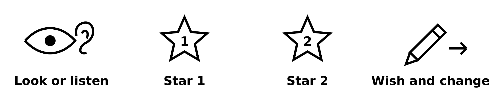

Creative Arts BUILD Spring 1 Week 6 Explore
My arts choices this term
Monday 8 February 2027 P5 40 minutes
Weekly outcome: Add a review to my arts log.
I can use my real work to say what I tried and learned.
Today I can
I can choose real work from this term.
I can say what I tried and what changed.
I can start a review in my own words.
In your book or arts log. You may point, speak, sign, draw or direct an adult.
Words to use
review: Look back and say what you think.
choice: Something you chose to do.
change: Something you did in a new way.
log: A record of your arts work.
Arrival and your arts log
0 to 3 minutesFind your art, tests and arts log.
Choose two real pieces or notes from this term.
You may review with just an adult.
What to say
Bring the actual work from Weeks 1 to 5 and the log. The pupil chooses two useful examples, such as a colour or sound response and the later changed piece. A precise witnessed sound or movement record is valid. If an item is missing, mark the gap honestly. We are looking at the pupil’s arts choices, not asking for a personal life story.
What good looks like
The pupil identifies actual work, or an honest current record. No earlier artefact is invented and private review is available.
Materials-free fallback
Read a real earlier witness note aloud. If none exists, invite a short current oral account and label it as recollection today. It does not prove a missing earlier performance.
Check and response
An original work, actual log or precise earlier witness note can support a claim. A new recollection is labelled as recollection.
Starter and your arts log
3 to 6 minutesLook or listen: what did you make?
Star: what part worked for your idea?
Tool: what did you change or learn?

Use the stars for helpful features and the tool for a change or next step.
What to say
Use the eye and ear, numbered stars and tool picture prompts. The pupil may point while you read the labels. The stars prompt specific helpful features, not scores. Model the frames: I made ___. I chose ___ because ___. I changed ___. Keep the picture strip visible beside the pupil’s own work.
What good looks like
The pupil links a prompt to a real feature and begins to distinguish a choice from a general judgement.
Materials-free fallback
Say the short labels look, listen, helpful part and change. Use gestures or spoken choices if printed prompts cannot be seen.
Check and response
A useful comment names a real feature, such as a soft beat or wide gap. Nice alone does not tell us what the pupil noticed.
I do and your arts log
6 to 12 minutesWatch a short review of an adult example.
The adult points to a real feature.
Hear one reason and one thing learned.
Step by step model
- Find Choose actual work or a real witness note.
- Notice Point to a helpful feature.
- Explain Say one choice or change and its reason.
- Check Read the review back and match it to evidence.
Adult example made today: I made a silent sequence. I changed the pause. The ending was clearer to me. I learned to test one change.
What to say
Make a tiny adult silent sequence with a short pause, then repeat it with a longer pause. Say: I made a quiet sequence. I chose a slow ending for my calm idea. I changed the pause so the ending was easier for me to notice. I learned to test a change. Date it today. Explain that this is an adult example made now, not a pupil’s half-term evidence. Model a short accurate scribed sentence and read it back.
What good looks like
The model connects a real action, a choice, a change and learning. The record uses the maker’s words and identifies the real date.
Materials-free fallback
Perform or direct the two silent versions. The pupil can listen to an exact description and confirm the difference without moving.
Check and response
Check: Which tells us more, it was good or I made the pause longer? The second identifies an actual change. Ask what changed in the model.
We do and your arts log
12 to 18 minutesHelp review the adult example.
Choose the sentence that fits the work.
Keep a fact about the work and a personal view apart.
Check together
Which review fits the real adult example?
What to say
Read two options: A I made every piece perfectly; B I made the pause longer and liked the clearer ending. Ask which the actual model supports. Choose B. Build one short review together, then leave the pupil’s own review open. Read back any scribed words. Do not turn the class model into an answer the pupil must copy.
What good looks like
The pupil selects a statement supported by the actual work and can add or confirm their own view.
Materials-free fallback
Offer the two statements orally and accept a point, sign or agreed yes or no signal. Repeat the actual pause if needed.
Check and response
If A is chosen, show the one change again. Parallel check: Can one silent sequence prove every piece was perfect? No. Use one observed feature instead.
Create and your arts log
18 to 32 minutesIn your book or arts log, choose your two examples.
I made ___. I chose ___ because ___.
One part I changed was ___.
I learned ___. I want to try ___.
Supported
Choose two real examples with an adult.
Use one picture and sentence start at a time.
Say or show a choice and a change.
Hear your words back and check the first grid rows.
Independent
Choose two examples from this term.
Write what you chose, changed and learned.
Point to the evidence for your review.
Check grid rows 1 to 3 with an adult.
Aspire
Review two examples in your own words.
Explain a change with a before and after feature.
Say how a test helped your learning.
Name one next step and check the grid.
Six week evidence review
Use your actual log with an adult. Each row needs an honest status and comment.
| Week | Weekly outcome verbatim | Status and evidence comment |
|---|---|---|
| 1 | Use colour/sound to express a feeling. | Shown / More to do / Not yet seen. Add a date, location, pupil words and support. |
| 2 | Create art linked to an emotion (links PSHE). | Shown / More to do / Not yet seen. Add a date, location, pupil words and support. |
| 3 | Find out about an artist who expresses feelings. | Shown / More to do / Not yet seen. Add a date, location, pupil words and support. |
| 4 | Try a new expressive technique. | Shown / More to do / Not yet seen. Add a date, location, pupil words and support. |
| 5 | Review and improve my piece. | Shown / More to do / Not yet seen. Add a date, location, pupil words and support. |
| 6 | Add a review to my arts log. | Shown / More to do / Not yet seen. Add a date, location, pupil words and support. |
What to say
Spend about eight minutes on the pupil’s review of the chosen examples. Use the picture prompts and one sentence starter at a time. Accept two or three meaningful sentences, recorded signs, drawings with the pupil’s explanation or exact scribed words. Then spend about six minutes looking across grid rows 1 to 3. Locate real evidence and add a brief comment or mark more to do or not yet seen. Use existing evidence rather than remaking all weeks. The pupil owns the review; the adult may write a separately labelled observation.
What good looks like
The review refers to actual work and a real choice or change. Grid rows have honest evidence references or gaps. Pupil and adult comments remain distinct.
Materials-free fallback
Use oral review and real witness notes. An adult records the pupil’s confirmed words when recording materials become available. Keep the actual date and do not claim a written entry exists until recorded.
Check and response
Possible pupil wording: I used a soft sound. I changed the last pause. I learned to try my idea twice. Accept different wording when the work supports it.
Review and your arts log
32 to 37 minutesHear your words read back.
Change any words that do not sound like you.
Keep the real work with your review.
What to say
Read the review aloud privately. Ask if it says what the pupil meant. Let them correct a word, point to different evidence or say that a memory is uncertain. Use the last two minutes to store the work and log together. Mark which rows still need a conversation next lesson.
What good looks like
The pupil confirms or corrects their own review. Evidence is stored and gaps remain visible without a penalty or invented success.
Materials-free fallback
Repeat the oral review in short parts, allowing an agreed signal to confirm or change each part.
Check and response
The pupil can change a scribe’s wording. Support does not remove ownership, but the record must name the help used.
Exit and your arts log
37 to 40 minutesMy review says ___.
One thing I learned was ___.
Next time I will finish my review.
Type instead
| Week | Weekly outcome verbatim | Status and evidence comment |
|---|---|---|
| 1 | Use colour/sound to express a feeling. | |
| 2 | Create art linked to an emotion (links PSHE). | |
| 3 | Find out about an artist who expresses feelings. | |
| 4 | Try a new expressive technique. | |
| 5 | Review and improve my piece. | |
| 6 | Add a review to my arts log. |
Your text saves to this device. It is not sent anywhere. Keep actual work and source records with it.
What to say
Date this draft review and record the form and support used. Keep the pupil’s chosen evidence references and the first grid comments. This is a draft for Tuesday, not a completed award claim.
What good looks like
An honest dated review draft and evidence trail are ready for the second lesson.
Materials-free fallback
Retain a precise oral or signed review note at the next recording opportunity. Label a pending record honestly.
Check and response
A short review can be sufficient when it captures the pupil’s own choices, learning and evidence. Length is not the assessment target.